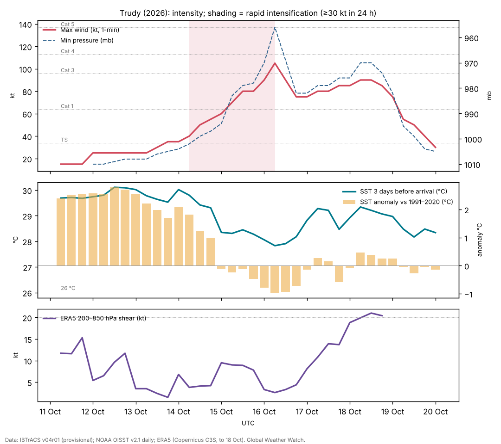

Hurricane Trudy (October 2026): rapid intensification over a corridor of cold wakes
Abstract
Trudy was the twenty-first tropical cyclone of the 2026 eastern North Pacific season and the fourth major hurricane in four weeks in the waters off southwestern Mexico. It formed south of southern Mexico on 13 October, intensified rapidly by 35 kt in 24 hours on 15–16 October, and reached a provisional peak of 105 kt (120 mph, Category 3) and 956 mb near 14.0°N, 102.4°W. It then weakened abruptly over water that earlier hurricanes had cooled, recovered to 85–90 kt on 17–18 October while moving northwestward roughly 160 km off the coast of Colima and Jalisco, and decayed over open water from 19 October under southwesterly shear and dry air. The sea under Trudy's peak position was 27.8 °C three days before it arrived, 1.0 °C below the 1991–2020 normal, whereas the same water had been 30.9 °C before Hurricane Polo passed over it in September. This supports the hurricane centre's suggestion that Trudy's interrupted intensification was partly caused by cool water left by Polo, Rachel and Simon. No deaths or major damage had been reported from Trudy by 19 October. The analysis uses provisional track data and should be revised against the official Tropical Cyclone Report.
Main findings
- Rapid intensification, then two interruptions. Winds rose from 40 kt to 105 kt between 14 Oct 0600 UTC and 16 Oct 0600 UTC; a 37-GHz microwave ring marked a forming eyewall on 15 October NHC discussion 9. Strengthening paused twice: on 15 October, when dry air wrapped around the northern side NHC discussion 10, and on 16 October, when the eyewall opened and an aircraft found only 982 mb NHC discussion 14.
- A track over cooled water. Trudy crossed the paths of three earlier hurricanes: Polo (25 days earlier), Rachel (17 days) and Simon (7 days). Along Trudy's track before 15 October the sea averaged 29.8 °C, +2.2 °C against normal; at the peak position it was 27.8 °C (-1.0 °C).
- Peak intensity is uncertain. The 105 kt in IBTrACS rests on satellite estimates at 0600 UTC on 16 October; the next aircraft, 12 hours later, found a much weaker storm. A later aircraft on 18 October measured 95 kt at flight level with a dropsonde suggesting about 85 kt at the surface.
- Offshore track. Weak steering between a ridge over Mexico and a trough over the Gulf kept Trudy moving slowly northwestward, parallel to the coast; its closest provisional position was about 160 km from land. Hurricane conditions on the coast were forecast but not reported.
- Background. Trudy formed in an exceptionally energetic eastern Pacific season (ACE 2.7 times the normal for the date) during a very strong, east-based El Niño.
1. Introduction
October 2026 brought an unusual sequence of strong hurricanes to the waters off southwestern Mexico. Polo reached Category 5 strength off Guerrero on 22 September; Rachel became a major hurricane on 1–2 October; Simon reached Category 4 on 10–11 October within about 50 km of the coast of Jalisco; Trudy followed a week later along almost the same corridor. By 22 October the season's accumulated cyclone energy east of 180° was 343.9 × 10⁴ kt², 2.7 times the climatological value for the date [7]. The season unfolded during a very strong El Niño that is unusually concentrated in the eastern Pacific [8].
This paper reconstructs Trudy's life cycle from provisional track data, the hurricane centre's analyses and sea-surface temperature, asks why its intensification stopped twice, and records its effects on Mexico. It does not assess the forecasts.
2. Data and methods
Track and intensity. Six-hourly positions, 1-minute maximum sustained winds and minimum pressures from IBTrACS v04r01 [1], downloaded on 24 October 2026. For 2026 these are provisional values carried over from the operational advisories (National Hurricane Center); the official best track, issued in the post-season report, can differ. Rapid intensification (RI) is an increase of at least 30 kt in 24 hours [2]. Accumulated cyclone energy (ACE) sums the squared 6-hourly winds at tropical-storm strength or above.
Ocean. Sea-surface temperature (SST) and its anomaly against 1991–2020 from NOAA OISST v2.1 daily [3], sampled at each 6-hourly position three days before the storm arrived, so that the storm's own cooling is excluded; the change from three days before to three days after gives the cold wake. OISST is a 0.25° analysis and smooths very small wakes.
Atmosphere. Wind shear and mid-level humidity are taken from the forecasters' own analyses in the advisories and discussions (which use the SHIPS model and satellite estimates), quoted with date and time. In addition, the deep-layer (200–850 hPa) vertical wind shear was computed from ERA5 (Hersbach et al. 2020, in the references) as the difference of the winds averaged over a 200–800 km ring around each position, using daily means of 00 and 12 UTC on a 2.5° grid, with data to 18 October 2026. This coarse estimate captures the large-scale shear but not shallower or mid-level shear, which forecasters sometimes cite. The Madden–Julian oscillation (MJO) is described by the real-time RMM index [4] (phase and amplitude; amplitude ≥ 1 means an active MJO). ENSO values are NOAA CPC indices (RONI JAS 2026 +1.69 °C; weekly relative Niño 3.4 +2.4 °C in mid-October).
Impacts. Deaths, damage and observations are taken from official statements where available and otherwise from wire-service reports, each cited; figures are preliminary.
3. Life cycle

Genesis (11–13 October). IBTrACS follows the precursor disturbance from 11 Oct 0600 UTC near 7.6°N, 88.0°W. The hurricane centre classified Tropical Depression Twenty-One-E at 1500 UTC on 13 October with 30 kt winds, after scatterometer data showed a closed but still broad circulation NHC discussion 1, and named it Trudy within the next 12 hours.
Rapid intensification (14–16 October). Trudy moved west-northwestward south of a mid-level ridge over central Mexico. Forecasters expected rapid intensification from the outset; SHIPS guidance gave a high probability NHC discussion 2. Trudy became a hurricane at 15 Oct 0600 UTC. At 1500 UTC on 15 October a cyan ring on the 37-GHz microwave channel showed a developing eyewall and a 30 kt rise in 24 hours NHC discussion 9. That afternoon an Air Force Reserve aircraft found 84 kt at 700 mb and 978 mb; a tongue of dry air wrapping around the north side was blamed for a pause NHC discussion 10. An eye then appeared and strengthening resumed, giving the provisional peak of 105 kt and 956 mb at 16 Oct 0600 UTC.
Collapse and recovery (16–18 October). By 1500 UTC on 16 October the eye had become less distinct, cloud tops had warmed and microwave data showed the eyewall open on the south side NHC discussion 13. The next aircraft found 982 mb and 76 kt at 700 mb: Trudy had weakened sharply without an obvious atmospheric cause. The forecaster wrote that the reasons were 'speculative' and that one possibility was cold water upwelled under the slow-moving hurricane where it crossed the paths of Polo and Rachel NHC discussion 14. From the evening of 16 October deep convection reorganised, and on 17 October an aircraft found a 38 n mi eye open to the southwest, 95 kt at 700 mb and 976 mb NHC discussion 18. On 18 October another aircraft found 95 kt at 700 mb in the northeast eyewall, with a dropsonde suggesting about 85 kt at the surface NHC discussion 22.
Decay (18–20 October). As Trudy moved away from the coast, increasing southwesterly shear and drier, more stable air broke down the core from the evening of 18 October NHC discussion 23. Within 12 hours most deep convection had gone NHC discussion 24; on 19 October the shear was about 15 kt in the SHIPS analysis, then 20–30 kt aloft NHC discussion 25, NHC discussion 26. The last advisory, at 0300 UTC on 20 October, declared Trudy a remnant low NHC discussion 27.
| Quantity | Value |
|---|---|
| Source of winds and pressures | NHC operational values |
| First and last fix (UTC) | 11 Oct 0600 UTC – 20 Oct 0000 UTC |
| First fix position | 7.6°N, 88.0°W |
| Peak 1-minute wind | 105 kt (120 mph, 195 km/h), Category 3, 16 Oct 0600 UTC near 14.0°N, 102.4°W |
| Lowest pressure | 956 mb |
| Largest 24-hour increase | 35 kt (15 Oct 0600 UTC to 16 Oct 0600 UTC) |
| Time at tropical-storm / hurricane / major strength | 150 / 96 / 6 hours |
| Accumulated cyclone energy (ACE) | 13.3 × 10⁴ kt² |
| Track length and mean speed | 2,882 km at 13.7 km/h |
From IBTrACS v04r01, provisional (operational NHC values). UTC throughout. The first fixes are the precursor disturbance before NHC classification.
4. The ocean beneath: a corridor of cold wakes
Over its first three days the water ahead of Trudy averaged 29.8 °C with an anomaly of +2.2 °C, reaching +2.8 °C: very warm, consistent with the El Niño background. From 15 October, as Trudy entered the corridor that earlier hurricanes had used, the pre-storm SST fell to 27.8 °C (-1.0 °C) at the peak position and stayed near or below normal for two days (Figure 1).
Three earlier hurricanes crossed Trudy's later path. The table compares the sea at the crossing points before each of them arrived with the sea three days before Trudy arrived. Hurricanes cool the ocean surface by mixing up colder water from below, and slow-moving storms cool it most [5]; the cooling can last weeks.
| Crossing point | Earlier storm (date, wind) | SST before earlier storm | SST before Trudy | Change |
|---|---|---|---|---|
| 15.1°N, 102.5°W | Polo (22 Sep, 90 kt) | 30.9 °C (+1.9) | 28.8 °C (-0.1) | -2.1 °C |
| 14.3°N, 102.6°W | Rachel (29 Sep, 50 kt) | 29.5 °C (+0.7) | 27.9 °C (-0.9) | -1.6 °C |
| 17.0°N, 104.6°W | Simon (10 Oct, 120 kt) | 29.0 °C (-0.1) | 28.5 °C (-0.6) | -0.5 °C |
OISST v2.1 at the nearest grid point, three days before each storm reached the point; anomalies against 1991–2020 in brackets. Crossing points are where Trudy came within 25 km of the earlier track (Polo 11 km, Rachel 22 km, Simon 0 km). Part of the cooling is seasonal: the normal SST falls by a few tenths of a degree between late September and mid-October here.
The pattern is consistent: the sea was 2.1 °C cooler where Polo had passed and 1.6 °C cooler where Rachel had passed, and the anomalies turned from strongly positive to negative. Two limits apply. SST is only the surface: the forecasters later noted that Trudy moved 'over warmer waters with increasing ocean heat content' on 16–17 October and re-strengthened, so the depth of warm water probably mattered as much as the surface value; ocean heat content was not analysed here. And the 982 mb found on 16 October may partly reflect an over-estimated satellite peak earlier that day rather than a true collapse.
Trudy's own wake was modest: the largest cooling under its track was 1.4 °C, smaller than Rachel's (more than 2 °C), because Trudy crossed water that had already been mixed.
5. Atmosphere and steering
Shear and moisture. Through 16 October the forecasters described a moist, low-shear environment over very warm water NHC discussion 12; the two pauses were attributed to dry air entering the core rather than to shear NHC discussion 10, NHC discussion 13. From 17 October the UW-CIMSS analysis put the shear at about 14 kt, with the vortex tilted to the northeast with height NHC discussion 16, NHC discussion 19; from the evening of 18 October southwesterly shear and drier, more stable air ended the hurricane NHC discussion 23.
ERA5 shear. The deep-layer (200–850 hPa) shear around Trudy was 2–14 kt from 13 to 17 October, mostly below 10 kt, and was only about 3 kt on 16 October, the day of the collapse. It rose to 21 kt on 18 October, when the final weakening began (Figure 1; data end on 18 October). The large-scale shear therefore cannot explain the collapse of 16 October, which strengthens the case for the ocean and dry air.
MJO. The RMM index was in phase 2 (amplitude 1.3) at genesis and phase 3 (1.1) at the peak, an active MJO with enhanced convection over the Indian Ocean. The MJO modulates eastern Pacific hurricanes through low-level westerly anomalies [6]; whether this phase helped or hindered Trudy is not tested here.
Steering. Trudy first moved west-northwestward south of a mid-level ridge over central Mexico. The ridge weakened as a mid- to upper-level trough developed over the western Gulf, and forecasters noted that Simon, then about 700 n mi away, could interact with Trudy's steering as the two came within 500 miles NHC discussion 5. Trudy turned north-northwestward into the weakness, briefly drifted west and stalled on 16 October NHC discussion 12, then moved northwestward parallel to the coast as a weak ridge rebuilt over eastern Mexico. Once weakened and shallow, it was steered west and then northwest by the low-level flow, south of Baja California Sur NHC discussion 24.
6. Impacts
Trudy's centre stayed offshore; its closest provisional position was about 160 km from land on 18 October. On 18 October a tropical storm warning remained from Playa Perula to San Blas and for the Islas Marías; forecasts called for 100–200 mm of rain (isolated 300 mm) in Michoacán, Colima and Jalisco, with a risk of floods and mudslides on slopes saturated by Simon [11]. On 18 October the government discontinued all warnings as Trudy moved away [12]. No deaths or significant damage attributed to Trudy had been reported by 19 October [12], [13]. Rainfall totals were not available for this paper.
The cumulative effect of the four storms on the same coast, with saturated ground and repeated evacuations, was a recurring theme of official messages; Simon's and Rachel's impacts are described in their own papers.
7. Climate context
The 2026 eastern Pacific season has been exceptionally active, with ACE 2.7 times the normal for the date by 22 October [7], during a very strong El Niño with record warmth off South America [8]. The strong eastern-Pacific warming of this El Niño probably helped keep the sea warm enough for repeated major hurricanes near Mexico. Trudy's case shows the other side: in a busy season, earlier storms can cool the very water later storms need. No attribution study of Trudy exists; we do not assess the role of climate change.
8. Uncertainties
- Track and intensity are provisional operational values. The peak of 105 kt rests on satellite estimates and may be revised.
- SST is a 0.25° surface analysis; ocean heat content and mixed-layer depth, which control how much a hurricane can cool the surface, were not analysed.
- Shear and humidity are the forecasters' operational estimates, not an independent reanalysis.
- Impacts are from press reports up to 19 October; official damage and rainfall reports were not yet available.
9. Conclusion
Trudy had every ingredient for a stronger hurricane except fresh water: it intensified rapidly over warm, moist, low-shear conditions, but its path ran through a corridor that Polo, Rachel and Simon had crossed in the previous four weeks, where the sea had cooled by up to about 2 °C. Its peak was brief and is uncertain, and it recovered only partly before shear and dry air ended it. The case is a clear example of how a hyperactive season can limit itself through the ocean.
Media evidence (links)
Videos, photographs, satellite images and news reports that document the storm. They are supporting evidence only: the analysis above does not rely on them, and the material belongs to its publishers, so it is linked rather than copied. Press videos and social-media clips are not independently verified.
| Type | What it shows | Source | Link |
|---|---|---|---|
| Satellite imagery and track | Satellite loops and the 6-hourly track (peak 120 mph, 956 mb on 16 Oct) | Zoom Earth | zoom.earth |
| Official graphics | Forecast cones, wind-speed probabilities, wind field and wind history | NHC archive | www.nhc.noaa.gov |
| News | Trudy approaches Mexico as Typhoon Champi threatens Guam (17 Oct) | AP via KPRC | www.click2houston.com |
| News | Trudy becomes a Category 3 hurricane off Mexico (16 Oct) | Boston Globe | www.bostonglobe.com |
| News | Trudy weakens off Mexico; warnings discontinued (18 Oct) | Reuters via KSL | www.ksl.com |
Evidence table
| Factor | Observed conditions and timing | Proposed role | Evidence type | Confidence | Key sources |
|---|---|---|---|---|---|
| ERA5 deep-layer shear | 2–14 kt to 17 Oct; ~19 kt on 18 Oct | Not the cause of the 16 Oct collapse; part of the final decay | Reanalysis (ERA5) | High | [9] |
| Warm, moist, low-shear start | SST 29.8 °C (+2.2) to 14 Oct; low shear and moist air per NHC | Allowed genesis and rapid intensification | Observed (OISST); operational analysis | High | [3] [10] |
| Dry-air intrusions | 15 Oct (north side) and 16 Oct (south side, eyewall open) | Interrupted intensification | Satellite and microwave interpretation (NHC) | Medium | [10] |
| Cold wakes of Polo, Rachel and Simon | Pre-storm SST at peak position 27.8 °C (-1.0); 1–3 °C cooler than before the earlier storms | Limited peak and contributed to the collapse on 16 Oct | Observed SST; mechanism by physical reasoning | Medium | [5] [10] |
| Southwesterly shear and dry, stable air | ~14 kt on 17 Oct rising to 20–30 kt aloft by 19 Oct | Caused final decay | Operational analysis (SHIPS, UW-CIMSS) | High | [10] |
| Weak steering | Ridge over Mexico weakened by a Gulf trough; possible interaction with Simon | Slow track parallel to the coast; kept centre offshore | Operational analysis | High | [10] |
| El Niño background | Very strong, east-based; ACE 2.7 times normal for the date | Raised the season's activity and SST before the storms | Climatological reasoning | Medium | [8] [7] |
References
- Knapp, K. R., M. C. Kruk, D. H. Levinson, H. J. Diamond and C. J. Neumann (2010). The International Best Track Archive for Climate Stewardship (IBTrACS). Bulletin of the American Meteorological Society 91, 363–376. Data: IBTrACS v04r01, NOAA NCEI (2026 positions provisional). doi:10.1175/2009BAMS2755.1 [bibliographic record; data read]
- Kaplan, J., and M. DeMaria (2003). Large-scale characteristics of rapidly intensifying tropical cyclones in the North Atlantic basin. Weather and Forecasting 18, 1093–1108. doi:10.1175/1520-0434(2003)018<1093:LCORIT>2.0.CO;2 [abstract read]
- Huang, B., et al. (2021). Improvements of the Daily Optimum Interpolation Sea Surface Temperature (DOISST) Version 2.1. Journal of Climate 34, 2923–2939. Data via NOAA PSL. doi:10.1175/JCLI-D-20-0166.1 [abstract read; data read]
- Wheeler, M. C., and H. H. Hendon (2004). An all-season real-time multivariate MJO index: development of an index for monitoring and prediction. Monthly Weather Review 132, 1917–1932. doi:10.1175/1520-0493(2004)132<1917:AARMMI>2.0.CO;2 [abstract read]
- Price, J. F. (1981). Upper ocean response to a hurricane. Journal of Physical Oceanography 11, 153–175. doi:10.1175/1520-0485(1981)011<0153:UORTAH>2.0.CO;2 [abstract read]
- Maloney, E. D., and D. L. Hartmann (2000). Modulation of eastern North Pacific hurricanes by the Madden–Julian oscillation. Journal of Climate 13, 1451–1460. doi:10.1175/1520-0442(2000)013<1451:MOENPH>2.0.CO;2 [abstract read]
- Colorado State University, Department of Atmospheric Science: real-time tropical cyclone season statistics (ACE and storm counts to date by basin), read 22–23 October 2026; site copy data/ace_season.csv. https://tropical.atmos.colostate.edu/Realtime/ [data read]
- Global Weather Watch (2026). The 2026 El Niño against 1982–83, 1997–98 and 2015–16: a preliminary comparison (Paper 4). enso-2026.html [own analysis]
- Hersbach, H., et al. (2020). The ERA5 global reanalysis. Quarterly Journal of the Royal Meteorological Society 146, 1999–2049. 2026 data: Copernicus Climate Change Service Climate Data Store (u, v at 850 and 200 hPa, to 18 October 2026). doi:10.1002/qj.3803 [full text read (open access); data processed]
- National Hurricane Center: Hurricane Trudy (EP212026) advisory archive, forecast discussions 1–27, 13–20 October 2026 (US Government, public domain). Text copies in data/tc2026/nhc/TRUDY/. https://www.nhc.noaa.gov/archive/2026/TRUDY.shtml [read in full]
- Associated Press (2026). Hurricane Trudy brings heavy rain and strong winds to Mexico's Pacific coast. 18 October 2026 (via ABC30 and KPRC). https://abc30.com/story/hurricane-trudy-lashes-mexicos-pacific-coast-heavy-rain-strong-winds/19951948/ [read]
- Reuters (2026). Hurricane Trudy weakens off Mexico's Pacific coast. 18 October 2026 (via KSL). https://www.ksl.com/article/51637803/hurricane-trudy-weakens-off-mexicos-pacific-coast-as-cleanup-effort-begins [read]
- Associated Press (2026). Trudy weakens to a tropical storm; Typhoon Champi a super typhoon. 18–19 October 2026 (via KPRC Click2Houston). https://www.click2houston.com/news/2026/10/18/hurricane-trudy-brings-heavy-rain-and-strong-winds-to-mexicos-pacific-coast/ [read]